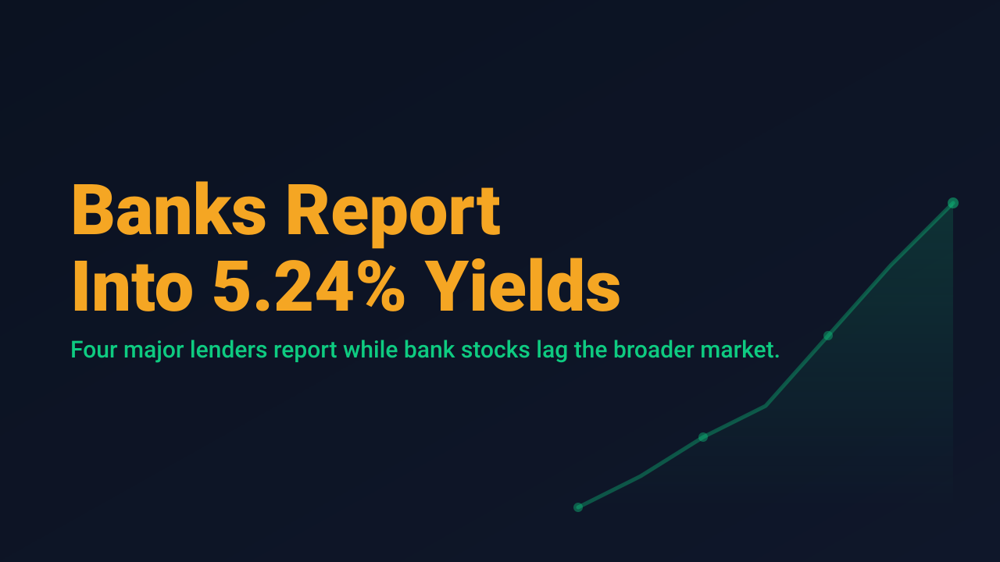
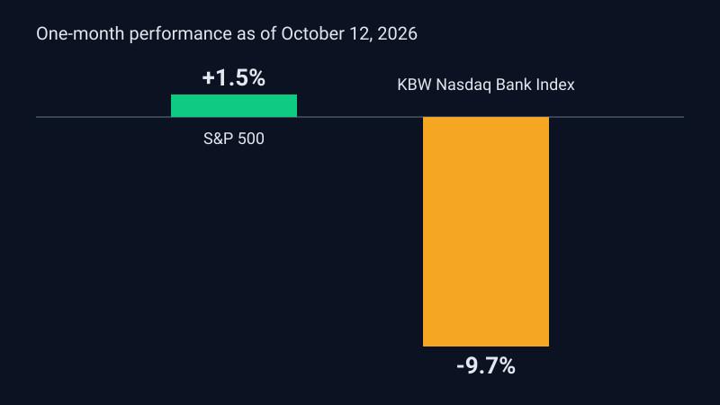

Banks Report Into 5.24% Yields

Four of the largest U.S. banks, JPMorgan Chase, Goldman Sachs, Wells Fargo and Citigroup, are scheduled to report third-quarter results on Tuesday, October 13, with Morgan Stanley following on Wednesday. They report into an unusual rate backdrop. The 10-year Treasury yield closed Friday at 5.24%, after briefly reaching about 5.37%, its highest level in more than 24 years, according to Yahoo Finance.
The equity market has already priced in some of the strain. A preview distributed by Market Updates via GlobeNewswire, citing The Motley Fool, reports that the KBW Nasdaq Bank Index fell 9.7% over the past month while the S&P 500 gained about 1.5%. Higher yields can reduce the market value of banks' fixed-rate securities, though they can also support lending margins over time. The same preview notes that the Federal Reserve recently delivered its first rate increase in more than three years.
The broader tape was mixed on Monday. The Dow rose 0.35% to 51,834.19, the S&P 500 slipped 0.15% to 7,800.20, and the Nasdaq Composite fell 0.49% to 27,232.53, per Yahoo Finance, with technology the weakest S&P 500 sector. Tuesday premarket, Benzinga reported Dow futures up 0.50%, S&P futures roughly flat, and Nasdaq 100 futures down 0.44%.

Macro risk is not confined to bank earnings. The September Consumer Price Index is due Wednesday at 8:30 a.m. ET, followed by the Producer Price Index on Thursday. Benzinga cited CME FedWatch pricing a 19.4% probability of a further Fed rate hike after the October meeting, and the 10-year yield at 5.19% in early trading. WTI crude traded near $92 and Brent near $105 amid Middle East tensions.
For swing traders, the practical takeaway is to separate the earnings reaction from the rate reaction. A strong print can be overwhelmed by a hot inflation number, and the reverse is also possible. Waiting for both events to clear, and sizing for the wider range of outcomes, is a defensible approach when the 10-year sits near multi-decade highs.